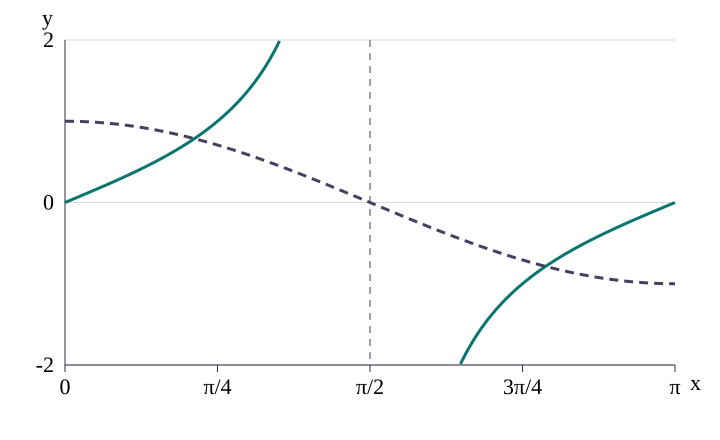

In aX²+bX+c=0, a, b and c are the coefficients: the numbers multiplying X² and X, and the constant. A root is a value of X that makes the equation true.
To factor means rewrite a sum as a product. A product is zero when either factor is zero. For example, (2X−1)(X+2)=0 gives 2X−1=0 or X+2=0, hence X=1/2 or X=−2.
If factoring is awkward, use X = (−b ± √(b²−4ac))/(2a). The plus and minus signs produce the two candidate roots.
The principal angle α is returned by inverse sine or inverse cosine. In degrees, inverse sine returns −90° to 90°, and inverse cosine returns 0° to 180°. Use periodic copies and quadrant signs to find the other allowed angles.
An interval such as [−1,1] includes both endpoints. A strict sign < excludes an endpoint; ≤ includes it. Keep exact fractions and roots in the calculator until rounding the final angle.
A quadratic has the shape . Here may be or .
Sine and cosine repeat every or . For sine, the second angle is ; for cosine it is .
Sine and cosine must lie in . Reject a root outside this interval.
If the equation contains and , use to leave one function only.
The six-step method
Convert to one trig function.
Treat that function as .
Factor or use the quadratic formula.
Reject impossible values.
Find the principal angle for every remaining root.
Generate all periodic values and keep the stated interval.
Worked example 1
Solve for .
Replace : .
Expand and collect: .
Factor: .
Reject . Keep .
; second is .
.
Quadratics in cosine
Worked example 2
Solve for .
Use : .
Quadratic formula: , giving .
Reject . The remaining root gives .
Worked example 3
Solve for .
Factor: .
; .
.
Quadratics in sine and radians
Worked example 4
Solve for .
Quadratic formula with : .
Reject . Keep .
Principal value is . In Q3 and Q4: .
Worked example 5
Solve for .
Factor: .
.
.
.
Mixed sine and cosine
Worked example 6
Solve for .
Cross-multiply: .
.
Both roots are in range: .
Worked example 7
Solve for .
Factor: .
Reject ; use .
.
Multi-angle equations
Worked example 8
Solve for .
Set . The range is .
Factor: .
; .
Divide by 2: .
Worked example 9
Solve for .
Let ; then .
Reference angle ; sine is negative in Q3 and Q4: .
Undo the shift: .
Radian ranges
Worked example 10
Solve for .
; reject the other root.
. The second sine solution is outside the interval.
Worked example 11
Solve for .
.
On , the four values are .
Divide by 2: .
Curve intersections
Worked example 12

Solid: tan x. Dashed: cos x
Tangent is undefined at x = π/2, marked by the vertical dashed asymptote. Work only on its two allowed branches.
For and on , an intersection satisfies . Thus , giving . By symmetry , and .
Hence solve after an identity
Worked example 13
If an earlier part reduces the equation to , then . On , .
Worked example 14
If the earlier result is for , then . Scale to : .
Check your choice
Your turn
A quadratic gives sin θ = −1.4 or sin θ = 0.2. Which root must be rejected?
Your turn
Let u = x/3 and 0 ≤ x ≤ π. What interval should u use?
Key ideas
Choose sine or cosine and convert the other square with the Pythagorean identity.
Solve every algebraic root, then reject only values impossible for sine or cosine.
Generate both periodic angles and obey open or closed endpoints.
For multi-angle equations, scale the range before solving and divide at the end.
Test roots in the original equation when squaring or cancelling could add or lose solutions.
Practice
Try each equation, then compare with the visible numbered solution.